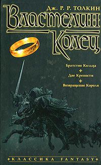

Фэнтези

Слева направо: Пендальф и его борода, Конан и ярость топора, негроэльф Дриззт и его кошка, Элрик и его чёрный фаллический символ, Артур и его корона, Робин Гуд и его нэко-уши.
Фэнтези (от англ. fantasy — фантазия) — поджанр ненаучной фантастики, свято любимый ролевиками и графоманами. Границы жанра довольно размыты, и разграничить фантастику, фэнтези и сказку нередко сложнее, чем провести границу между луркоёбами, битардами и школьниками, а порой отнесение к тому или иному жанру зависит лишь от воли автора или критика.
Объект изображения: модель полностью вымышленного мира, существующего автономно. Связи с реальным миром формальные (иерархическая лестницв, моральные и нравственные ценности и т.п.). Фэнтезийный мир полностью смоделирован авторои, со своей географий, экономикой, политикой, национальным разнообразием. В пространственно-временном отношении он обычно никак не связан с реально существующим: т.е. он не является будущим, прошлым или параллельным настоящему миром. И именно цельность, органичность такой художественной действительности так привлекает читателя.
Главный герой: персонаж, по многим признакам схожий с персонажами сказок, былин: умный (сильный), «избранный», но в отличие от сказок, показан в динамике развития его внутреннего мира. (Во многих текстах центральный персонаж не отличается ни силой, ни умом, акцентируется внимание на его «серости», но в большинстве своем выделяется богатым внутренним миром: бесконечной добротой к «хорошим», ненавистью к «плохим». И именно в этом и заключается его «избранность»: только он один, а не полк элитных воинов способен изменить мир.)
Целевая установка: моральные, духовные ценности человека (эльфа, гнома…). Противостояние Добра и Зла.
Стилистика: обилие наименований разных фольклорных, мифологических, выдуманных автором персонажей; особый стиль разговора различных рас; возможен выдуманный язык, алфавит.
История
I. Темные века Дотолкиенства.
Об этих временах известно немного. Некоторые эксперты предполагают, что тогда и вовсе ничего не было. На самом деле фэнтези, конечно, было, только в таком виде, в котором нынешний читатель уже не разжуёт. Годный пример — легенды о короле Артуре, которые отличаются от нынешнего героического фэнтези чуть более, чем названиями и именами.
Некоторые наивно полагают, что средневековые эпосы и рыцарские романы отличаются от фэнтези тем, что авторы верили в реальность своих героев. На самом деле, для своего времени Кретьен де Труа и Томас Мэлори были такими же борзописцами и киломэтрами, как сейчас Боб Сальваторе с тёмным эльфом Дриззтом. Кретьен, например, когда строгал сериалы, выдумывал новых героев, тупо заменяя имена и названия в старых романах (даже чужих). По некоторым данным, даже Эдды, предмет обожания долбоверцев, писались христианами, ни на грош в языческих богов не верившими. А уж «Калевала» — точно.
Первым же каноничным, то есть признанным литературоведами, жившими на сто лет позже, писателем современного фэнтези считается Эдвард Дансени (1878—1957), напейсавший бесчисленные сборники рассказов о фантастических мирах. А Ходжсон с его эпической «Ночной землёй» и вовсе считается повлиявшим не только на более тёмную сторону сабжа, но и на жанр ужасов в целом. Есть мнение, что в близкой к фэнтези манере писали также такие бумагомаратели, как Эдгар Райс Берроуз, Артур Мейчен и даже Майринк.
II. Древняя эпоха

Коран. Так все начиналось…
Но первое по-настоящему известное и современное фэнтези сваял не кто иной, как Роберт Говард, современник Лавкрафта (который подкидывал немало идей своему другу-неофиту). В те годы жанр ещё не получил красивого ярлычка Fantasy, а прозывался менее эстетичным, но более метким тэгом Sword & Sorcery. Рассказы Говарда о Конане-варваре ещё в тридцатые годы прошлого века стали популярны, хотя настоящая слава к автору пришла после смерти. Всё это писалось для журналов, поэтому допускались только рассказы на одно приключение. Говард уже издал было по частям первый полноразмерный текст про Конана-варвара «Час дракона». Самое забавное, что по сюжету это вылитый «Властелин колец», только на десять лет раньше: Конан в роли Фродо, Ксальтотун в роли Саурона и Сердце Аримана в роли Кольца. Но тут автор невовремя впал в депрессию и выбил себе мозги.
Поэтому характерные черты жанра пришёл устанавливать всем известный филолог Толкин с «Властелином колец». Тёмный Властелин, Главный Артефакт, эльфы-гномы-орки, брождения по карте вымышленного мира с кучей странных названий, три пухлых тома непрерывного сюжета с войнушками и пока ещё крайне недоразвитым колдунством. Истинный культ.
Толкин заодно совершил прорыв в расширении целевой аудитории. В то время все книжки строго делились на взрослые и детские, и угадайте, в какой категории издавались истории про гномов и колдунов? Например, в то же время друг Толкина Льюис создал свою «Нарнию», и её иначе как детскую не рассматривали, несмотря на философские глубины и умелый пиар христианства. Толкину же удалось протолкнуть своё творение как «для взрослых» за счёт натуралистичного описания битв. В итоге дети её всё равно читали, но и взрослым было не стыдно читать то же, что и их дети. Результат — триумф инфантильно-подростковой литературы «для детей и взрослых», потом выразившийся в «семейном кино» и в большей части приключенческой фантастики. Даже «Нарния» переехала из детской литературы в разряд «общей». Одно время высоколобые мужи, испытывая зуд от того, что им нравится детская книжка, пытались даже вытащить Толкина из фэнтези в боллитру, используя несокрушимую логику «фэнтези — говно, а Толкин — нет». Но с выходом кинотрилогии, игр по её мотивам и пластиковых Леголасов в Happy Meal они вздохнули и признали Профессора попсой, которую можно клеймить.
Были в те старинные годы ещё и Мервин Пик с заунывным «Горменгастом», и Теренс Уайт с переделками Артурианы (замечательная тетралогия «Король былого и грядущего»), и Лайон Спрэг де Камп, и другие самобытные авторы, но кто их помнит? В основном, нынешняя фэнтезня — это приключения аля Говард в декорациях аля Толкин. Их и будем считать отцами-основателями.
III. Profitable
После внезапного успеха покетбукового издания «Властелина» в США и переиздания силами Лайона Спрэга де Кампа работ о Конане вдруг выяснилось, что на фэнтези можно стричь купоны. Издатели, прежде считавшие все эти «сказки» литературой для детей (что было недалеко от истины), начали массово выпускать фэнтезню. Поначалу, в шестидесятые, этим занимались фантасты крупного калибра: Урсула Ле Гуин, Майкл Муркок, Роджер Желязны и иже с ними. Для них это было не постоянным жанром для извлечения долларов, а свежим непаханным полем, поэтому многие из их книг являются дикой помесью НФ, фэнтези, альтернативной истории и ЛСД без малейшего следа Говарда или Толкина (потом это всё обозвали «Новой Волной» и на том успокоились). Но потихоньку стало ясно, что такое напряжение умишка читателя не так уж и необходимо.
В 1975 году тов. Гари Гигакс изобрёл настольную игру Dungeons & Dragons, чем увековечил в золоте своё имя для настольных и компьютерных игр, но одновременно подложил жирную свинью под литературный жанр. Следующее поколение авторов, выросших на настолках, уже считало, что для написания крутого эпика на двести томов достаточно в своей жизни прочитать «ВК» Толкина и поиграть в «D&D». В итоге мозги у этого поколения оказались накрепко забиты фэнтезийной «клюквой», которая вскоре превратилась в чистый рак, убивающий фэнтези.
С конца семидесятых эльфы, тёмные властелины и главные артефакты потекли широкой рекой. И если, например, Уэйс, Хикмен и Роб Сальваторе честно устроились в отдел игровых новеллизаций и не скрывали, что перекладывают игроту на бумагу, то ещё большее число борзописцев занимались тем же самым без лицензии. У таких киломэтров, как Терри Брукс, Гудкайнд или отечественные Перумов и Пехов, от D&D отличаются разве что имена, названия и 1-2 уникальных юнита расы. Именно в то время и укрепилось мнение, что фэнтези — это некошерно.
IV. Время пресыщения
Естественно, долго это безобразие продолжаться не могло, и к концу двадцатого века всё больше читателей смотрели на фэнтези как на говно. Поэтому традиционный эпос про Бобро и Осло с эльфами и драконами начал потихоньку издыхать. А на смену ему пришла целая куча новых разновидностей:
- «Тёмные» фэнтезисты — Мартин, Сапковский, Уильямс, Глен Кук, Камша, Аберкромби, Бэккер. От предшественников отличаются претензией на историческую достоверность. Прекрасные принцессы и благородные рыцари здесь «реалистично» ругаются матом, насилуют селянок и подтирают задницу чуть ли не на балу, а главный герой может вместо спасения мира предаваться забуханиям и половой ебле. Очень ценятся реконструкторами за знание матчасти и атмосферу «настоящего» грязного-вонючего-потного-кровавого прошлого. По сравнению с категорией новеллизаторов, доставляют намного больше, хотя бы не такими предсказуемыми сюжетами, а зачастую и описанием нехилых придворных интриг и тактики-стратегии. В таких книгах обычно куча сюжетных линий, так что любой, даже главный, герой может быть выпилен в любой момент, а сюжет пойдёт себе дальше. Это, впрочем, не работает с Сапковским, который пишет вполне обычное героическое фэнтези, но с еблей и довольно оригинальным постмодернистским глумом.
Ольга Брилева-Чигиринская прославилась среди толкинистов тем, что переписала один из сюжетов Толкина именно в таком стиле — мат, ебля, бухло и блеванье вперемешку с высокими миссиями. Стоит отметить, что в лучших произведениях этого поджанра натурализмом не особо размахивают, ибо он не цель, а лишь средство художественной выразительности. Как бы подразумевается, что герой в окантовке из крепкого словца и крепкого же бухла будет ближе и понятней читателю, чем воздушно-неземной эльф, про которого неизвестно даже, есть ли у него гениталии.
- New Weird — Мьевиль, Гейман, Пулман, иже с ними. Основные критерии — максимально возможный отход от канонов жанра (Мьевиль, например, ненавидит Толкина), как можно больше глубинного смысла™, мир максимально логичен, но, как правило, логика своеобразная. Чем больше постмодерна, тем лучше. А ещё там будет гомосексуальная ёбля, биологические основания появления вампиров, компьютеры на волшебных кристаллах etc. Мир получается, кстати, не особо приятным. Описывая роман в стиле New Weird, грамотный критик обязательно употребит слово «кафкианский». К слову, поздний Пратчетт плавно переходит в New Weird.
- Юмористы, то есть люди, отнесшиеся ко всей этой вакханалии с иронией и извлекшие из этого профит. По крайней мере, самый известный из них, Терри Пратчетт, имел состояние немногим уступающее Тёте Ро. А ещё у них был Роберт Асприн! Так или иначе, практически во всех произведениях жанра есть тот или иной юмор. Но если в «обычных» книгах он обычно подобран грамотно и уместно, то в романах, заявленных как юмористические, он нередко оказывается натужным, потому что где-то шутки просто не требуются, но жанр как бы вынуждает.
В этой стране юмористические произведения нередко представляют собой поток петросянщины — например, шуток, основанных на игре слов, или жопно-сортирной трансляции камедиклаба. Но даже над этим ещё можно посмеяться — о вкусах не спорят, угу. Куда хуже, когда «юмор» составляют бесконечные идиотские срачи между героями, или же когда герои изображаются сказочными долбоёбами и на каждой странице совершенно по-дебильному вляпываются в самые идиотские и нелепые ситуации. Вот за это, за намеренное и тотальное окартонивание персонажей, уже по-настоящему хочется взять и уебать. Очень неприятно осознавать, что авторы, считающиеся мастерами отечественной фантастики (например, Белянин), скатываются в сраное говно из-за любви к таким приёмам.
- Городское фэнтези — жанр-страдалец, прилепившийся к фэнтези случайно. Как нью-метал — не метал, так и городское фэнтези, по идее, не фэнтези, а подвид т. н. «мистики». Проблема в том, что «мистика» — изобретение наших литературоведов, на Западе о ней и не слышали. Суть ГФ сводится к тому, что фэнтезийный мир — это наш, и эльфы — а чаще вампиры, маги или иная магическая хуйня — живут не где-то в Неверландии, а прямо в соседнем доме, только как правило замаскированные. Да, твой сосед с дрелью на самом деле призывает Ктулху, вампир работает на станции переливания, на Лурке тебя троллят настоящие зелёные тролли, прикидываясь анонимусами, а в подворотне тебя поджидает гопник, который на самом деле замаскированный гоблин. Жанр неохватен и размыт, так как включает в себя чуть ли не весь вампирятник, многие «супергеройские» комиксы, а также большую часть New Weird. Из произведений этой страны наибольшую известность получили произведения «Пейсателя» под общим названием «Дозоры» и «Тайный город» некоего Вадима Панова. Довольно неплохим писателем является Джим Батчер, который на данный момент написал 14 книг.
- Прозевавшие поворот истории — как ни странно, живут и не жалуются, штампуют все тех же тёмных властелинов и девочек-волшебниц с небольшими модернизациями (например, поменяв Бобро и Осло местами), и неплохо их продают. Вышеупомянутые Роулинг, Джордан (принял ислам), Перумов, Пехов, тысячи их.
- Женское фэнтези — поджанр, пишущийся бабами для баб же. Зачастую сюжет о противостоянии Бобра и Осла отодвинут на второй план, а ведущее место оставлено для духовных терзаний главной героини в деле поиска
ёбыря Принца На Белом Коне™. Квинтэссенция подобного бреда наглядно представлена в печально известном высере Сумерки. Впрочем, любовные романы пишутся давно и небезуспешно, ибо их целевую аудиторию никто не отменял. Что плохого в том, что они нашли свою нишу и в жанре фэнтези? И вообще, подобные книги хотя бы поинтереснее обычных «реалистичных» любовных романов. Ибо в последних — либо одни сопли, либо остро-надуманная драма, и при этом ни приключений, ни загадок. А в фэнтезийных — всё это есть, пусть и носит второстепенный характер.
- В последнее время из данной разновидности всё чаще выделяют Женское Юмористическое Фэнтези (ЖЮФ), тем более, что поток книг подобной направленности с каждым годом только увеличивается. Первоначально был представлен вполне читабельной О. Громыко, но невообразимо загажен её последовательницами. Родоначальник многих надоевших штампов в фэнтези-среде, активно используемых 95% молодых и талантливых авторш.
- Техно-фэнтези — фэнтези, но все эльфы и гномы — это такие реальные расы, порой — вымершие и оставившие после себя всякие артефакты. Магия преподносится с научным (степень «псевдо» — варьируется в широких пределах) подходом. Эльфы на космических истребителях, гномы в силовой броне, космические корабли, далёкие галактики и параллельные миры. Чётких границ нет, всё укладывается в рамки вменяемости конкретного автора. В качестве примера можно привести Екатерину Белецкую (дурь у неё — знатная!) или Иара Эльтеруса. В целом жанр весьма на любителя, но штырит — знатно.
- Кстати, Белецкая — одна из немногих, кто пытается описывать «третий пол», в связи с чем многие её произведения достаточно спорны с этической точки зрения и нередко являются основой для прений сторон. Впрочем, до братьев наших Стругацких с их пришельцем Константином («Сказка о Тройке»), у которого девяносто четыре родителя пяти различных полов, ей, конечно же, далеко.
- В этой стране существует ещё особый поджанр «славянское фэнтези», состоящий из: долбославия, гой-еси языка псевдобылинного и Конана с бородой и в лаптях. Волкодава вы уже узнали, но по уровню долбославности, евроазиатства и просто фимоза Юрий Никитин даст Семёновой сто очков форы. В этой категории встречаются годные книжки, но как правило, чем они годнее, тем меньше в них остаётся собственно фэнтези. Семёнова это поняла и пишет исторические романы с капелькой мистики; та же картина, но помноженная на годную матчасть, — у Елизаветы Дворецкой, ибо она кагбе из реконструкторов.
Если говорить о других авторах, то большинство остального славянского фэнтези относится к юмористическому (а чаще всего — пародийному), и так или иначе зиждется на персонажах русских народных сказок: Бабе Яге, Кощее, Змее Горыныче и всяких леших-водяных-кикиморах, выставляемых в самых разных ролях. Тут уже всё зависит от оригинальности автора (именно оригинальности, а не склонности оригинальничать), а также от его умения автора шутить, а не петросянить.
V. Будущее?
Очень смутно и туманно, но пока существуют такие писатели, как Сапковский, Пратчетт, Мартин и ещё несколько, жанр не скатится в говно полностью
Любимый жанр графоманов
«Неизбежный закон фэнтези: всю книгу все куда-то идут.»
Народное наблюдение
Sad, but true. Сейчас любой школьник, сыгравший в пару РПГ, начитавшийся того же Толкиена и насмотревшийся говноаниме, начинает мнить себя эрудитом в области фэнтези, способным что-либо написать.
Помимо школьников, писательство фэнтези популярно у духовно-богатых дев. Судя по всему, так они хотят убежать от серой действительности, где все парни мудаки, преподы в школе или институте — козлы, а подруги — дуры. Их героини, чаще всего, являются стереотипными мэрисьюхами. Подобные барышни, самое смешное, отличаются куда большей плодовитостью на текст, чем школьники, и способны высирать целые многомегабайтные талмуды. Гнездом непуганых дур является печально известный сайт «Самиздат». Там можно видеть кучи хвалебных комментов от читателей мужского пола, но что-то нам подсказывает, что их интересует сам автор, а не её потуги про очередную эльфийскую воительницу. Однако попробуйте оставить негативный отзыв и получите тонны ненависти от автора и ее хомяков.
К сожалению, практика показывает, что знание формы ушей у эльфов, «эльфийского» языка и техники метания фаерболов не только не помогает, а ещё и мешает при написании хорошей книги.
Понятно, что для того, чтобы хоть что-нибудь написать в относительно серьезном жанре, просто необходим настоящий ОБВМ и хоть какое-то знание предмета дела. И эти знания, увы, из игрушек и книжек почерпнуть достаточно трудно.
Фагготрия
А что вы думали? Помимо графоманов, есть у сабжа и яростные поклонники.
Фаги банальные.
Есть такой особый тип людей, которые не могут читать ничего, кроме фэнтези. Описывать их долго и скучно, лучшее определение они дают уже сами себе:
Мне про наш мир читать как-то неинтересно…
Nuff said.
Фаги извращенные.
Поклонники одного конкретного писателя (лучший пример — Толкиенисты).
Именно эти милые личности способны до умопомрачения заебывать аффтаров, других фагов и просто несчастных людей, которым не повезло оказаться рядом, рассуждениями о любой антинаучной хуйне, и о том, что в той книге борода гнома изображена неправильно.
Более тяжелая форма заболевания — неприятие книг, написанных не данным конкретным автором или (если речь идёт о межавторском цикле) — не по данной вселенной/сеттингу.
Лучший способ общения — не лезть. Заебут.
Ролевики.
В принципе личности довольно безобидные, хотя чаще всего также входят и в одну из предыдущих групп. Особо весёлые придумывают игры по только что прочитанным книгам, в результате чего вполне могут шокировать авторов, узнай те об играх своих фанатов.
Реконструкторы.
Собственно любителями жанра не являются, притом мня себя великими его ценителями. Так же, как и фаги извращенные, способны часами сраться о соответствии книги действительности (правда, споры ведутся уже не о гномах и эльфах, а о двуручных мечах за спиной, конных арбалетчиках и соответствии изображенной в тексте катаны реальной).
Игрушки
Некоторые компьютерные игры считаются принадлежащими к сабжу. К сожалению, здесь разграничение фэнтези/не фэнтези ведется именно по признаку: есть эльфы (гномы, феи, колдунство) или нет их. Если пытаются сделать RPG в другом антураже (например, научно-фантастическом), немедленно начинаются вопли «это шутер, а никакое не RPG!». И, как это ни прискорбно, так оно зачастую и оказывается.
Но если в игре сюжет ещё можно компенсировать геймплеем, то что сказать о высерах, слепленных по мотивам?
Что хорошего?
А что же действительно хорошего в сабже?
Во-первых, как место обучения писателей, он очень даже годен.
Во-вторых, безграничный простор для творчества. Не нравятся эльфы? Напиши свое фэнтези, где вместо эльфов какая-нибудь Тау. Есть шанс, правда, вызвать этим бурление говн, но и это не так уж плохо.
В-третьих, быдло таки может насладиться описанием секса с эльфийкой, и тихо пускать слюни.
В-четвертых, небыдло, жаждущее философии, очень часто может отыскать в книге какую-нибудь великую мысль.
И наконец: это же просто классно. Это такой же жанр, как и остальные, в нем полно годной литературы. Чего ж вам еще?